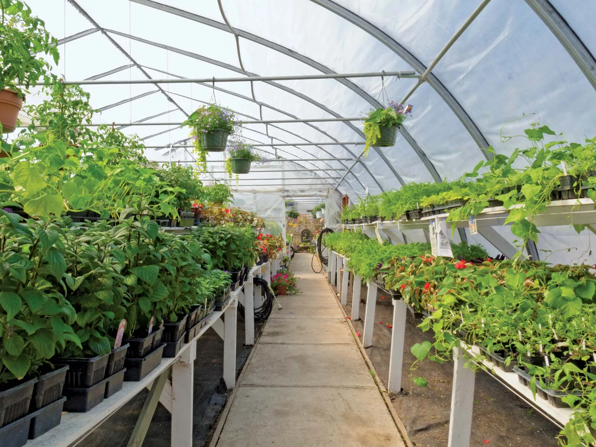

1.Horticulture deals with vegetables,trees,flowers,fruits and nuts,shurbs
2.Horticulture:typically involves Smaller-scale,intensive cultivation
3.It is Done on small plot of land
4.Only plant cultivation covered
5.Plants used for both food and non food use(food,comfort,beauty)
